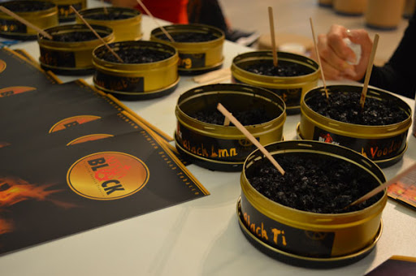
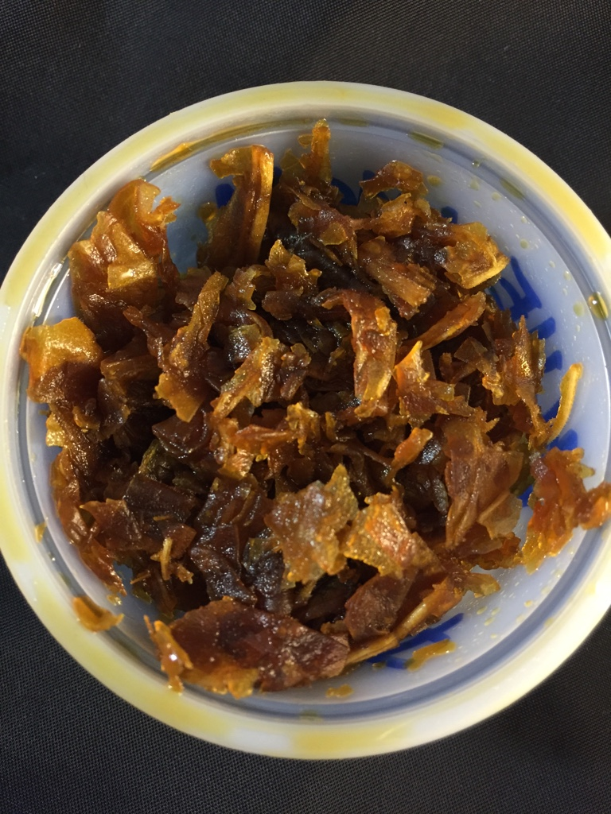
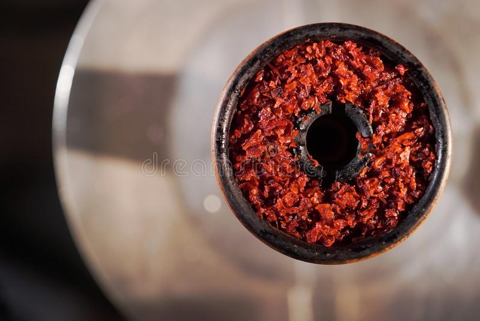
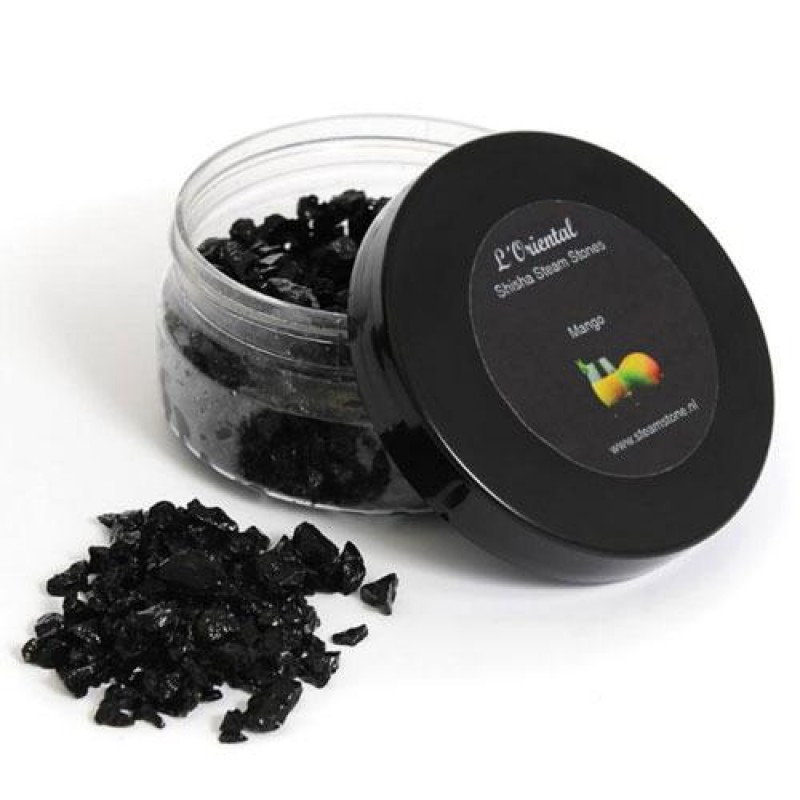

TIPOS DE TABACOS
Según su lugar de procedencia y otros factores como la intensidad de sabro o el corte de la hoja, podemos apreciar diferentes tipos de tabaco.
Tabaco Tumbak (Tabaco Negro)
Éste tabaco se caracteriza por ser alto en carga de nicotina por tanto necesita prepararse de una forma especifica para aumentar el sabor y la duración. Es usado principalmente en paises Turcos y Rusia. A la hora de preparar una cazoleta con este tabaco al contrario que con el resto de tabacos que no hay que meterlo a presion, éste si deberemos ponerlo a presion debido a que necesita que no haya tanta corriente de aire en su interior.
Tabaco Tabamel(Tabaco Rubio)
Es un tabaco de origen Árabe y se esta formado por: Tabaco, miel, glicerina y esencias diversas que le dan aromas y sabores variados.Es el tipo de tabaco mas consumido en la actualidad y tiene dos "vertientes" que usan las marcas mas conocidas. Los sabores tradicionales los tiñen con colorante rojo mientras que los no tradicionales los dejan con su color natural de tabaco rubio. Para su preparacion simplemente debemos poner el tabaco en la cazoleta de forma aireada, no prensada debido a que este tabaco necesita coger aire a la hora de fumar.
 Tabaco en Piedras
Por último tenemos este tipo de tabaco no tan comun que son las piedras.Es una versión de tabaco para shishas que consiste en piedras de minerales naturales, a las que se añade melaza de fruta en estado líquido. Son reutilizables una vez has acabado de fumar vuelves a meterlas en su caja y las mueves para que vuelvan a impregnarse de la melaza.
